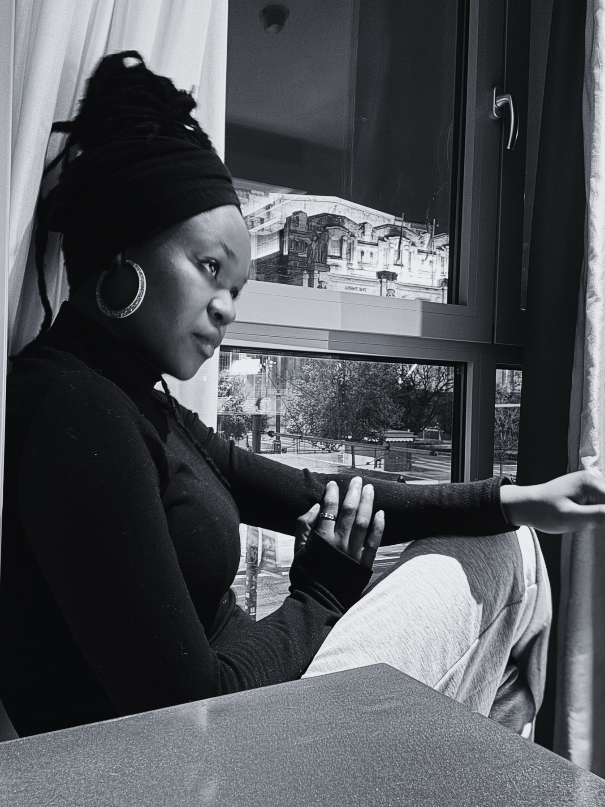

Curious aren't ya? Well, let's fix that, shall we?
I am Janie Ogeah, a narrative and creative strategist drawn to lies that tell the truth faster than facts ever will.
Black Feeling (2025) is my official debut to narrative film. I previously followed a passion for writing and producing TV and Radio programmes in Nigeria. With my relocation to Malta and the local independent film community as a huge motivator, I began my transition from commercial productions to narrative shorts, and have so far written four shorts, directed two, and produced three.
I admire the works of Steven Knight and Tim Burton.
I also wear a more corporate hat as a marketing and communication professional with 10+ years of experience in both the public and private sectors. I studied Mass Communication as an undergraduate, after which I proceeded to work with a Nigerian print media as a journalist and sub-editor.
I left the public sector for a few years and joined a digital marketing and PR agency, handling PR and copywriting projects for clients in the oil and gas, sports apparel, and fintech industries. Thereafter, I joined a global leader in events and exhibitions where I drove its sustainability communications and stakeholder engagements across Europe, Asia, Africa and the Americas.
The past year saw me return to the public sector, where I now combine my Marcomms experience with MBA expertise to conceive and execute creative strategies that manage and sustain institutional relationships.
Core Competencies
- Creative Leadership
- Strategic Brand Management
- Digital & Traditional Marketing
- Project Coordination
- Cross-functional Team Management
- Campaign Strategy
- Data-driven Storytelling
Film Credits
- Human in the Machine (2024) — Writer, Director, Producer
- Black Feeling (2025) — Writer, Director, Producer
- Who Killed Laughter (2025) - Writer
- Off The Face (2026) — Co-writer, Co-Producer, Actor, Creator
Lies that tell the truth faster than facts ever will.